Submitted to ICLR2026
We sincerely thank the reviewers for their thoughtful and constructive feedback. The reviewers' questions motivated us to conduct additional analyses and experiments, which allowed us to further validate and clarify the strengths of SCoTL-pose.
Specifically, this rebuttal:
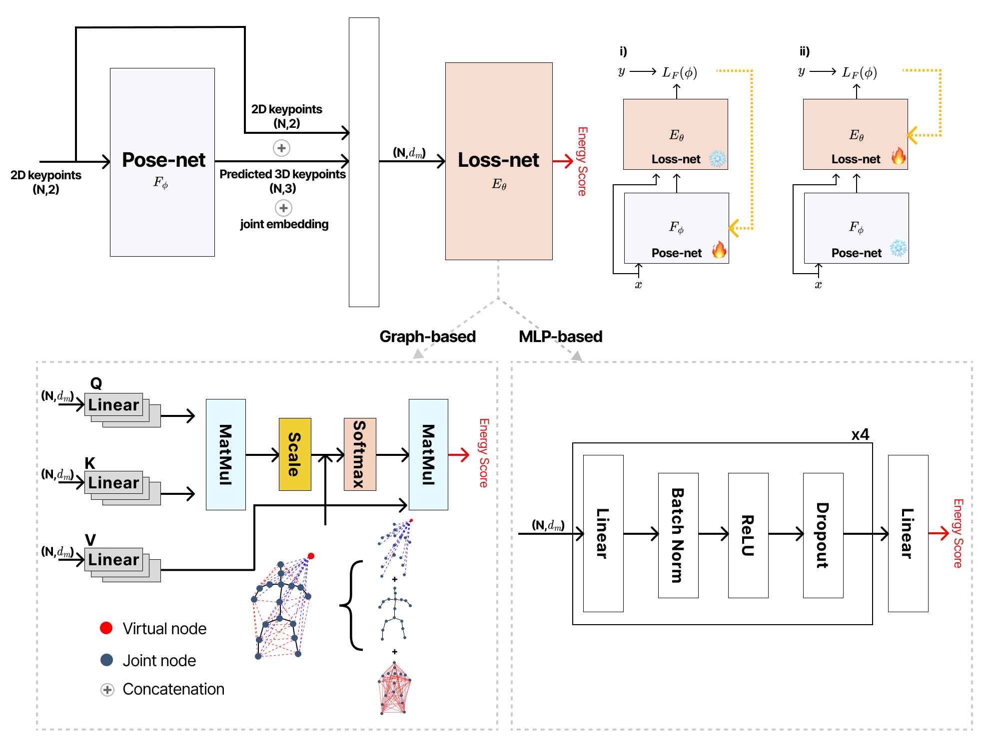
The figure illustrates our overall architecture: a pose-net that lifts 2D keypoints to 3D, and a loss-net that takes joint-level features formed by concatenating the 3D keypoints, the original 2D keypoints, and a joint-type embedding. We consider two loss-net variants: a simple MLP and a graph-based model.
The graph-based loss-net explicitly reflects the human skeleton: joints are treated as nodes, edges follow the kinematic connectivity, and a CLS token attends to all joints to aggregate global pose information. The loss-net outputs a single scalar energy for each pose, which serves as a learned structural consistent loss.(we also include an MLP-based loss-net, omitted here for brevity)
During training, the pose-net and loss-net are optimized in an alternating way. In i) of the diagram, we update only the pose-net, minimizing a combination of the supervised loss and the energy predicted by the loss-net. In ii), we freeze the pose-net and update the loss-net so that it learns to assign lower energy to structurally plausible poses and higher energy to implausible ones.
During the rebuttal process, we have performed substantially more extensive experiments. (i) We conducted a much broader hyperparameter search, which led to additional improvements over the original submission. (ii) In response to the reviewers’ suggestions, we further evaluated SCoTL-pose on stronger state-of-the-art backbones, including KTPFormer and a diffusion-based model. Across all these settings, we observe a consistent improvement: SCoTL-pose improves over the corresponding baselines and achieves state-of-the-art performance on our benchmark datasets.
| Method | MPJPE↓ | P-MPJPE↓ |
|---|---|---|
| PoseFormerV2 (T=27) | 42.7 | 31.6 |
| + SCoTL-pose (MLP) | 41.5 | 31.2 |
| + SCoTL-pose (Graph) | 40.5 | 30.3 |
| D3DP (T=243, H=20, K=10, J_Best) | 20.4 | 15.4 |
| + SCoTL-pose (MLP) | 18.1 | 13.9 |
| + SCoTL-pose (Graph) | 17.7 | 13.7 |
| KTPFormer (T=243, H=20, K=10, J_Best) | 18.9 | 14.3 |
| + SCoTL-pose (MLP) | 18.9 | 14.5 |
| + SCoTL-pose (Graph) | 18.3 | 13.9 |
| Method | MPJPE↓ | PCK↑ | AUC↑ |
|---|---|---|---|
| P-STMO (T=81) | 33.4 | 98.0 | 77.5 |
| + SCoTL-pose (MLP) | 32.9 | 98.1 | 77.7 |
| + SCoTL-pose (Graph) | 32.5 | 98.2 | 78.0 |
| PoseFormerV2 (T=27) | 29.6 | 97.0 | 77.8 |
| + SCoTL-pose (MLP) | 28.5 | 97.4 | 78.4 |
| + SCoTL-pose (Graph) | 27.8 | 97.5 | 79.0 |
| D3DP (T=243, H=20, K=20, J_Best) | 28.8 | 98.2 | 80.4 |
| + SCoTL-pose (MLP) | 28.5 | 98.6 | 80.8 |
| + SCoTL-pose (Graph) | 27.8 | 98.7 | 80.9 |
Hyperparameter search results.
State-of-the-Art Model result
For P-STMO, the original submission reported undertrained models with preliminary hyperparameters due to the deadline. After submission, we trained both the baseline and SCoTL-pose to convergence with a more thorough hyperparameter search, and we now report these updated P-STMO results in the revised manuscript.
Analysis on Human3.6M.
Even though the benchmark is already highly saturated, the diffusion-based model benefits from leveraging multiple negative samples and still achieves a noticeable improvement, outperforming KTPFormer by 1.2 points on MPJPE. We also observe that, despite KTPFormer itself being near the performance ceiling, incorporating our method still leads to further gains.
Analysis on MPI-INF-3DHP.
Our approach consistently improves performance across settings as well. Unfortunately, for KTPFormer and MotionAGFormer on 3DHP we could not run experiments, because the official baseline code is not publicly available and reported reproducibility issues in the community remain unresolved in the official repository.
Instead, we provide a comprehensive set of 32 experimental results (single-frame models: 3 baselines × 3 datasets × 2 SCoTL-pose variants; multi-frame models: 4 baselines × 2 variants on H36M and 3 × 2 variants on 3DHP), which consistently corroborate our findings and offer strong evidence for the robustness and generalizability of our approach.
This section presents qualitative comparisons between the baseline and SCoTL-pose on an in-the-wild dataset. Even under challenging conditions with varying lighting, backgrounds, and viewpoints, SCoTL-pose often produces more natural and structurally consistent 3D poses than the baseline.
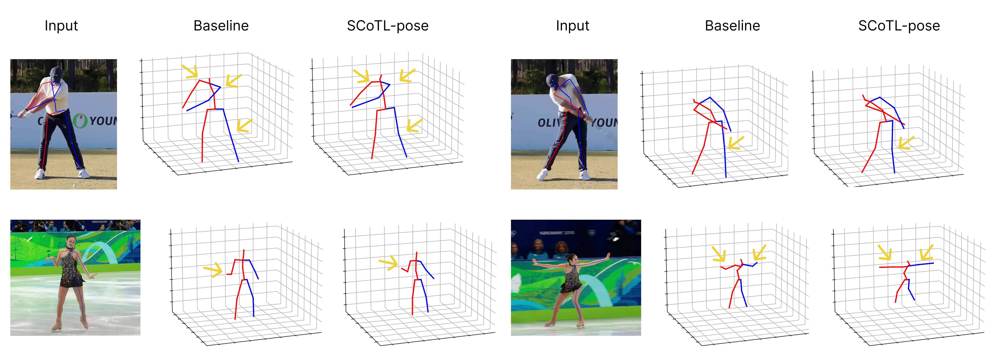
Our analysis shows that the learned energy score is strongly related to structural plausibility. Below we summarize how the loss-net energy reflects this relationship.
Analysis of the pose-net trained with and without the energy model.
Analysis of the energy itself.
To better understand the behavior of SCoTL-pose, we further examined samples on which SCoTL-pose performs similarly to, or even worse than, the baseline in terms of P-MPJPE. Somewhat surprisingly, visualization of these cases revealed that SCoTL-pose often produces poses that are structurally more plausible. For the same samples, SCoTL-pose also achieves higher structural consistency. This analysis reinforces two key points: (i) the loss-net effectively captures structural signals and guides the pose-net toward more structurally consistent poses, and (ii) P-MPJPE alone is insufficient to assess structural consistency, underscoring the importance of our structural metrics as a complementary evaluation measure.
This example shows the 2D input and the corresponding 3D prediction rendered under rotation.
| Metric | Baseline | SCoTL-pose |
|---|---|---|
| P-MPJPE(mm) | 43.5 | 45.0 |
| LSE (%) | 8.3 | 3.9 |
| BSLE (%) | 6.9 | 5.1 |
| LLE (%) | 11.9 | 4.6 |
2D input
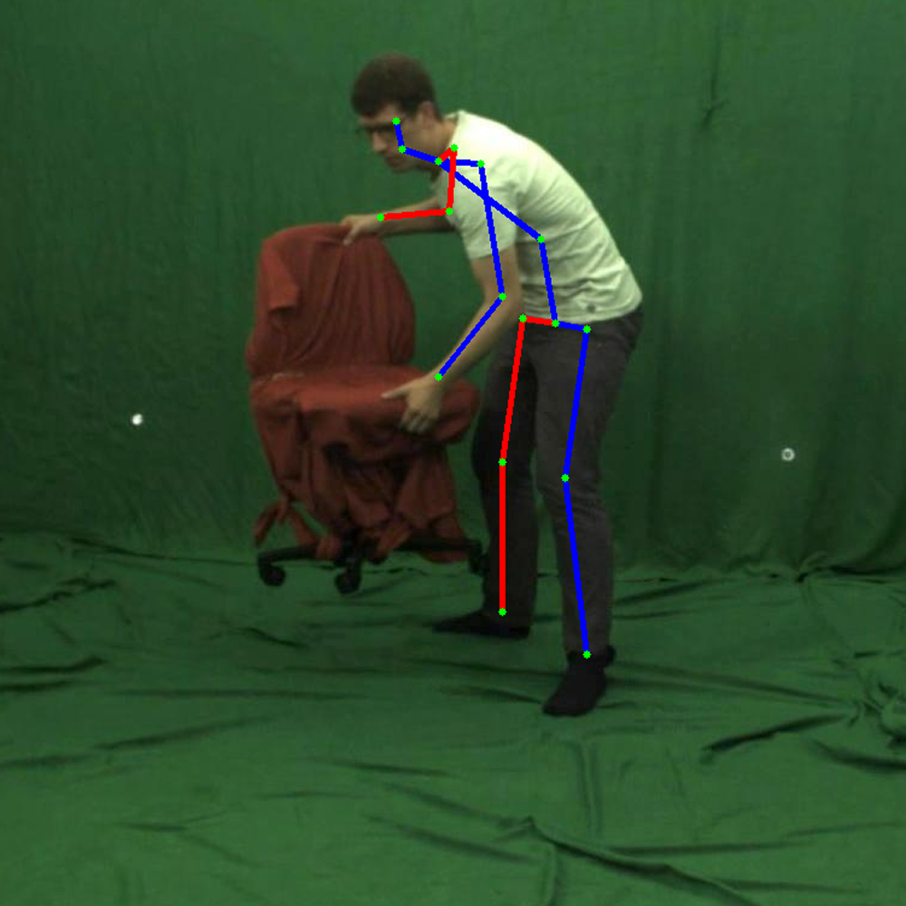
3D prediction
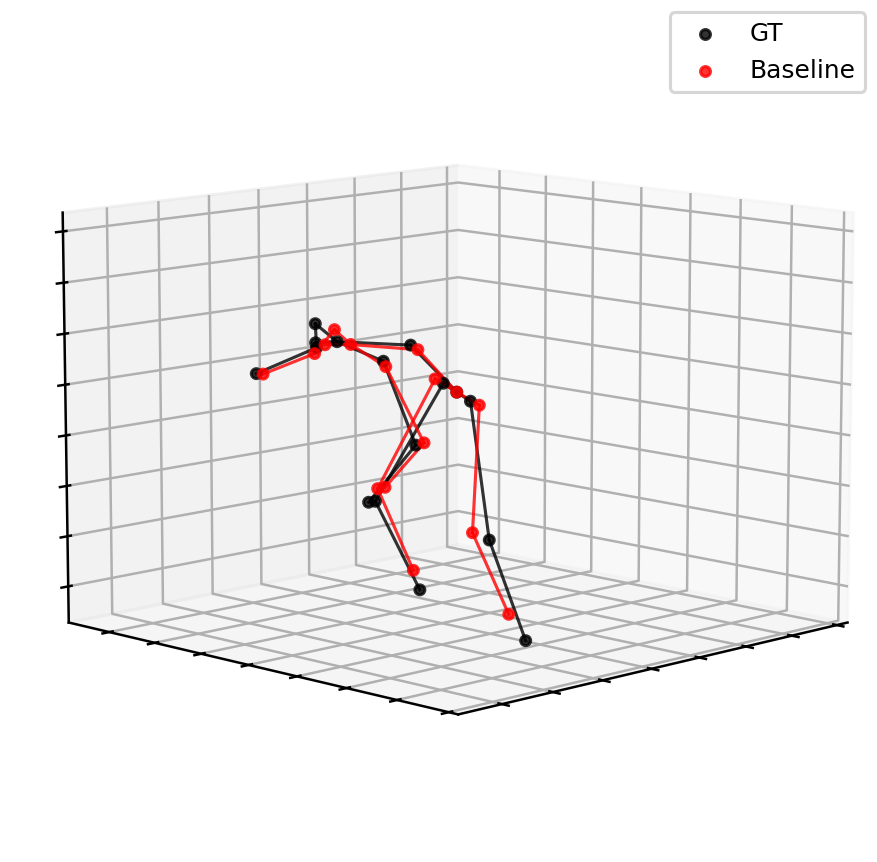
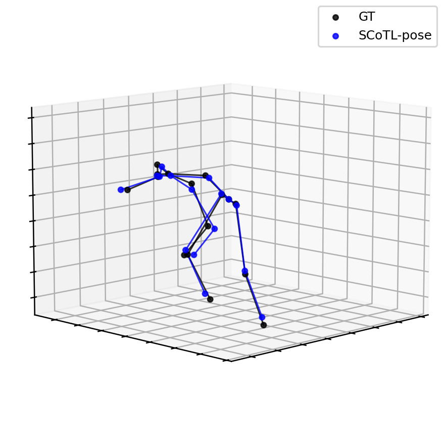
This example shows the 2D input and the 3D prediction for sample 10802.
| Metric | Baseline | SCoTL-pose |
|---|---|---|
| P-MPJPE(mm) | 44.3 | 44.3 |
| LSE (%) | 13.6 | 9.8 |
| BSLE (%) | 7.2 | 4.5 |
| LLE (%) | 12.6 | 4.7 |
2D input
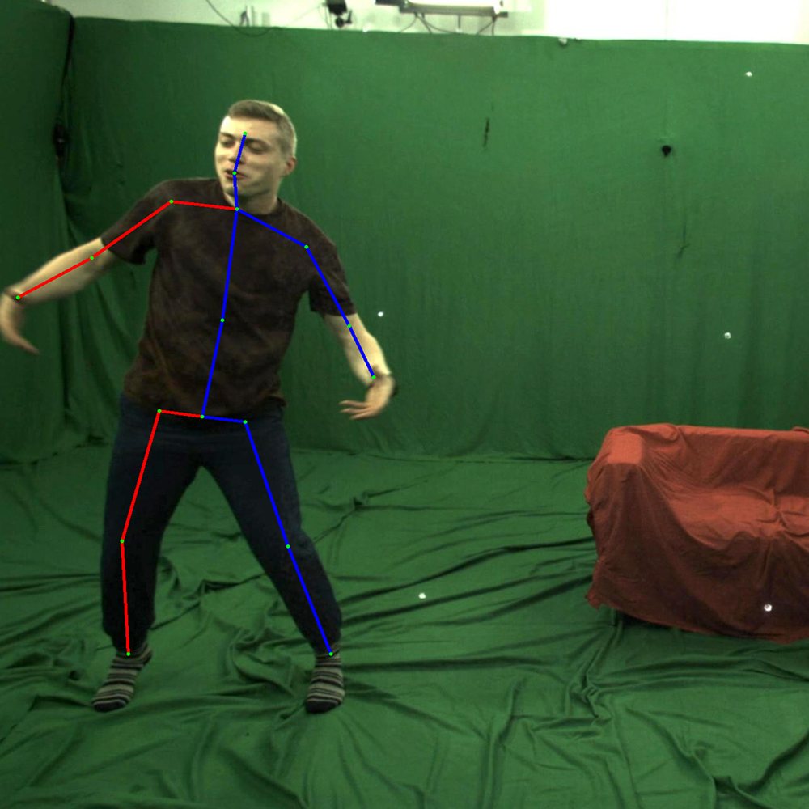
3D prediction
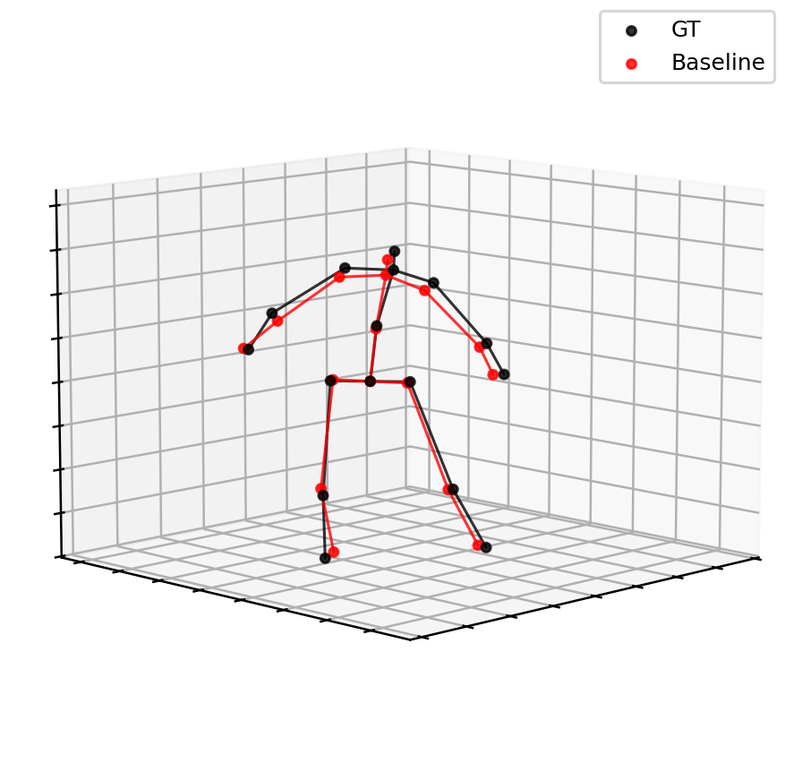
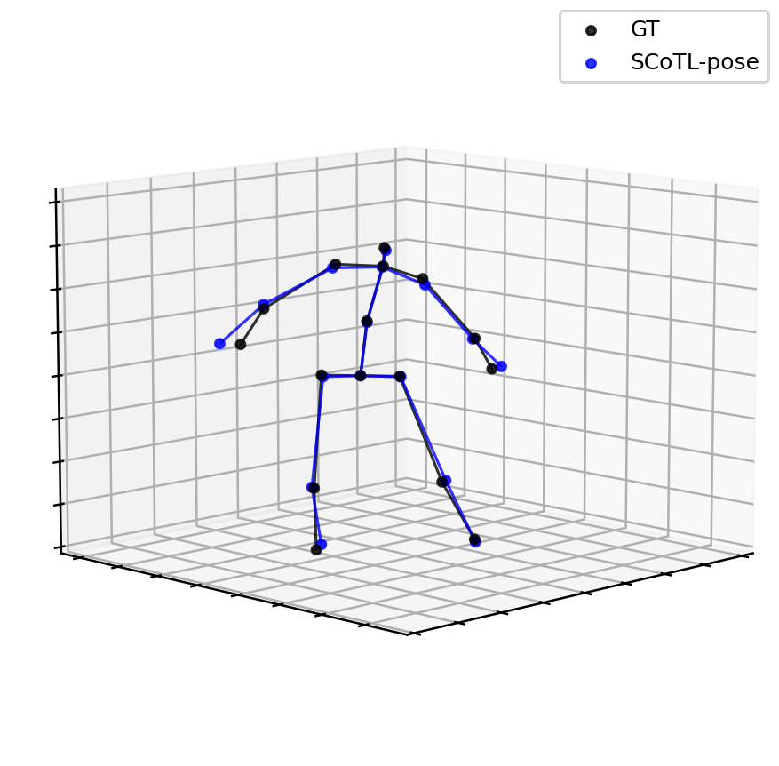
This example shows the 2D input and the 3D prediction for sample 21300.
| Metric | Baseline | SCoTL-pose |
|---|---|---|
| P-MPJPE (mm) | 24.7 | 28.1 |
| LSE (%) | 9.2 | 8.4 |
| BSLE(%) | 8.6 | 2.8 |
| LLE (%) | 4.8 | 4.1 |
2D input
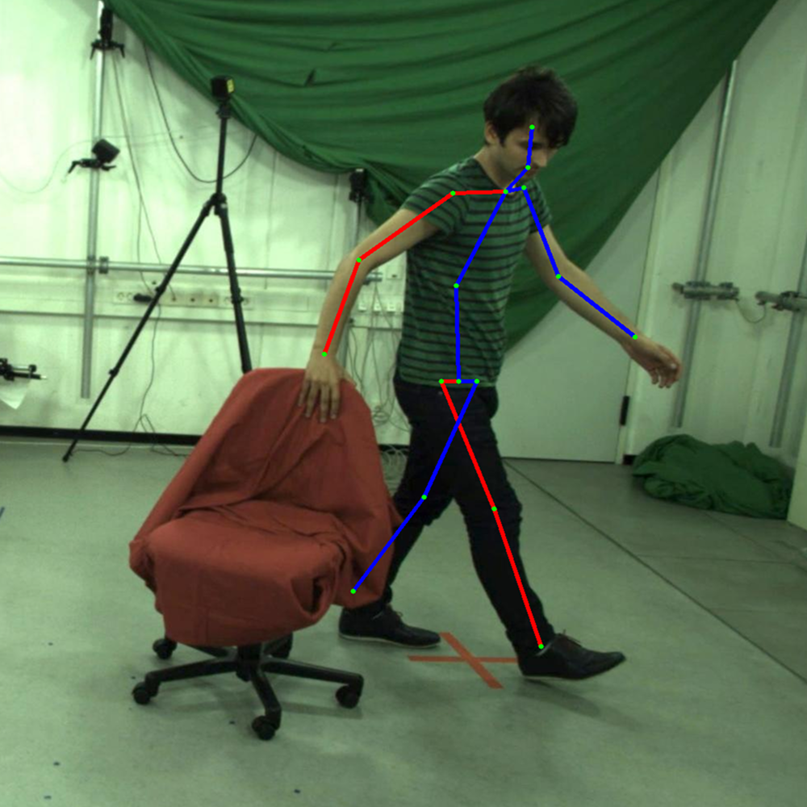
3D prediction
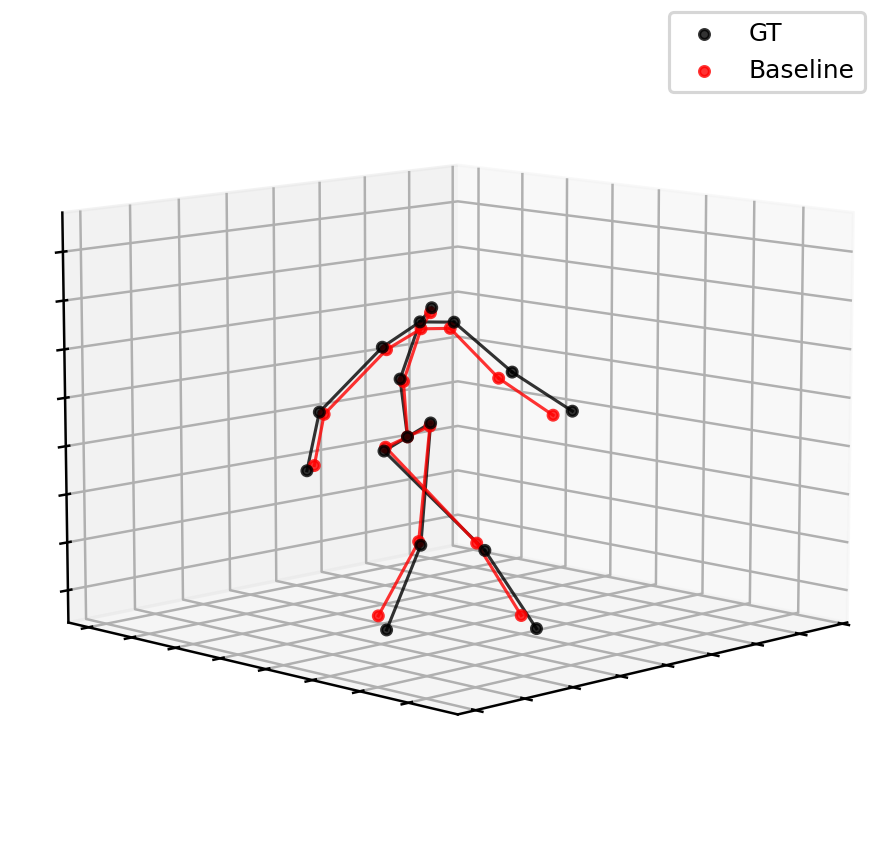
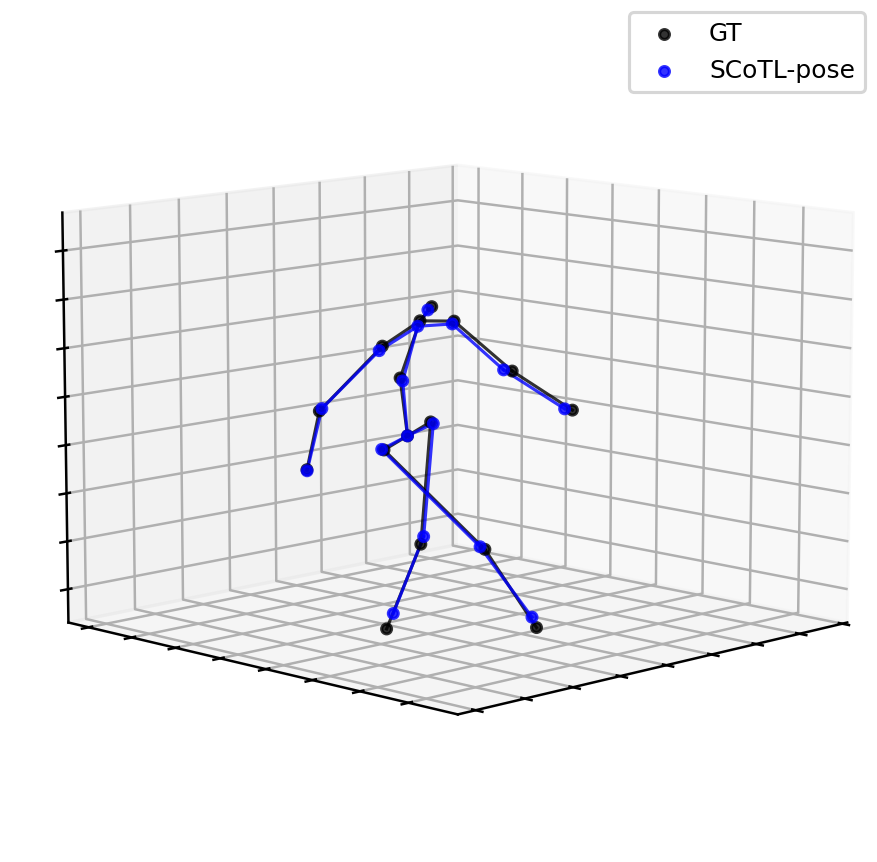
To test whether the loss-net overfits the training data, we run cross-dataset experiments between Human3.6M (H36M) and MPI-INF-3DHP (3DHP), training on one dataset and evaluating on the other. If the loss-net were merely memorizing domain-specific patterns, adding SCoTL-Pose would be expected to worsen cross-dataset performance relative to the baseline, which would provide direct evidence of such overfitting.
| Train → Test | Baseline P-MPJPE↓ | SCoTL-pose P-MPJPE↓ |
|---|---|---|
| H36M → 3DHP | 169.75 | 163.04 |
| 3DHP → H36M | 187.21 | 181.82 |
These results highlight two key points. First, the cross-dataset experiments indicate that limited domain generalization and sensitivity to input formatting are common issues in current 3D HPE models, rather than a specific flaw of our method. The histogram visualizations further show that both the baseline and SCoTL-Pose suffer from the dataset shift, although the overall trends remain similar.
Second, regarding the original concern about overfitting of the loss-net, we do not observe any additional degradation beyond the baseline: SCoTL-Pose largely preserves its in-domain gains under cross-dataset evaluation. This suggests that the loss-net does not overfit in a way that harms the pose-net’s cross-dataset performance, while the remaining domain gap remains an interesting direction for future work.
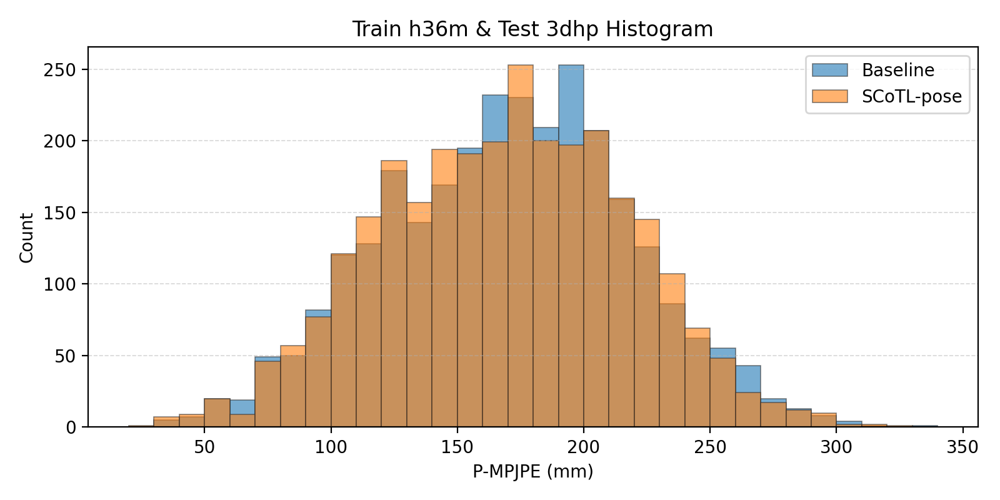
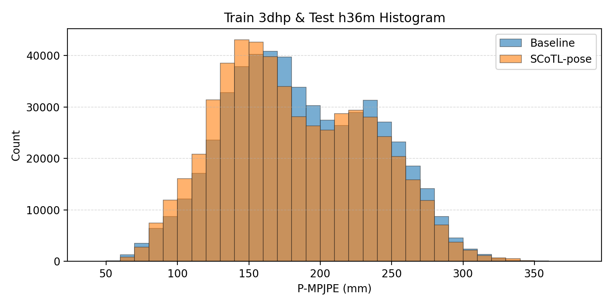